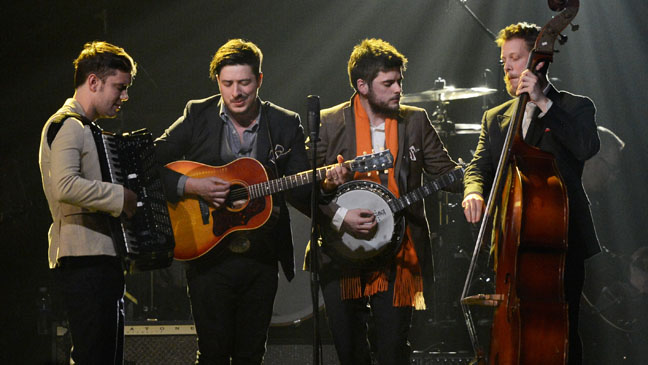

What makes Miley Cyrus more popular than someone who is actually talented?
How much of the popularity of music is determined by the press around the artist and from the inherent characteristics of the music?

How do I classify this Mumford and Sons song?
Are they no longer considered folk music now that they are too popular to be hipster?

Are genres a figment of our imagination, culture, or psychology?
Or can we analytically separate genres based on the inherent wave properties of sound de novo?